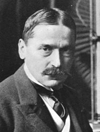
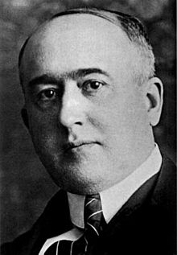
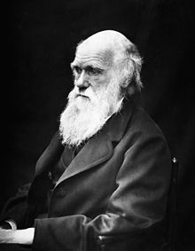
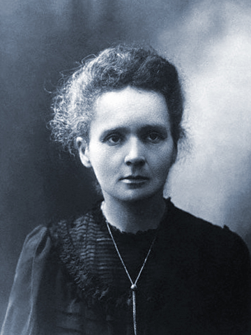
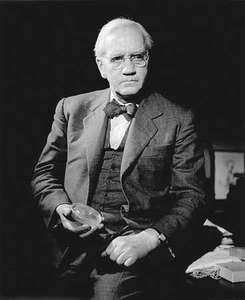
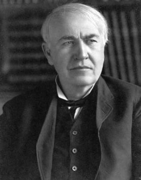
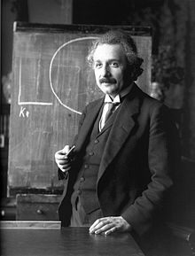

Mihajlo Pupin
Mihajlo Pupin je rođen 29. septembra 1858. godine u Idvoru u Banatu. Sam sebi je dao nadimak “Idvorski” po rodnom mestu. Njegovi roditelji, Konstantin i Olimpijada, iako nepismeni zemljoradnici, upućivali su ga od ranog detinjstva da ide u svet i bavi se naukom. Majka mu je govorila da je znanje svetlost koja osvetljava kroz život i da ne sme ostati slep kod očiju.
Jovan Cvijić
 Jovan Cvijić je rođen 29. septembra 1865. godine u Loznici. Jovan cvijić bio je osnivač Srpskog geografskog društva, predsednik Srpske kraljevske akademije (sada Srpska akademija nauka i umetnosti) profesor i rektor Beogradskog univerziteta, počasni doktor Univerziteta Sorbone i Karlovog univerziteta u Pragu. Bavio se podjednako društvenom i fizičkom geografijom, geomorfologijom, etnografijom, geologijom, antropologijom i istorijom. Smatra se utemeljivačem srpske geografije.
Jovan Cvijić je rođen 29. septembra 1865. godine u Loznici. Jovan cvijić bio je osnivač Srpskog geografskog društva, predsednik Srpske kraljevske akademije (sada Srpska akademija nauka i umetnosti) profesor i rektor Beogradskog univerziteta, počasni doktor Univerziteta Sorbone i Karlovog univerziteta u Pragu. Bavio se podjednako društvenom i fizičkom geografijom, geomorfologijom, etnografijom, geologijom, antropologijom i istorijom. Smatra se utemeljivačem srpske geografije.
Milutin Milanković
Milutin Milanković je jedan od najčuvenijih srpskih naučnika, a NASA ga je uvrstila u 15 najvećih umova svih vremena koji su proučavali Zemlju. Bio je prvi srpski doktor tehničkih nauka. U sferu njegovih interesovanja spadale su: matematika, astronomija, klimatologija i geofizika. Rođen je 28. maja 1879. godine u selu Dalj koje se nalazi na Dunavu, a preminuo je 12. decembra 1958. godine u Beogradu.
Čarls Robert Darvin
Čarls Darvin je rođen 12. februara 1809. godine u mestu Šruzberiju, u grofoviji Šropšir. Njegovi roditelji su imali šestoro dece, a on je bio peto dete. Darvin potiče iz dobrostojeće porodice naučnika. Otac mu je bio doktor, a deda botaničar i lekar. Njegova majka, Suzana, umrla je kada mu je bilo samo osam godina. Čarls je još kao dete voleo da istražuje prirodu. Osnovno obrazovanje je stekao u svom rodnom mestu, a 1825. godine je upisao medicinu na univerzitetu u Edinburgu zajedno sa svojim bratom.
Marija Kiri
Rođena je kao Marija Sklodovska 7. novembra 1867. godine u Varšavi, a otac joj je bio ugledni profesor. Osnovno obrazovanje je stekla u lokalnim školama, dok ju je otac na svoju ruku podučavao nauci i naučnim istraživanjima.Vrlo brzo je postala član studentske revolucionarne organizacije, zbog čega je osećala da treba da napusti Varšavu koja je tada bila pod ruskom vlašću, pa na kratak period odlazi u Krakov kojim je dominirala Austrija.U Pariz se seli 1891. godine, gde upisuje studije fizike i matematike na Univerzitetu u Sorboni. Tamo je 1894. godine upoznala Pjera Kirija, profesora na katedri za fiziku za kojeg se naredne godine i udala. Studije je završila uspešno, postavši doktor nauka.
Aleksandar Fleming
Rođen je 6. avgusta 1881. godine u Darvelu, u porodici zemljoposednika. Sa 13 godina se preselio u London, gde je kasnije i studirao medicinu. Diplomirao je 1906. godine, a potom je, pod mentorstvom doktora Almrota Rajta, počeo da se bavi istraživanjima u oblasti vakcinacije na Medicinskom fakultetu u Londonu.Bio je deo medicinskog osoblja u Prvom svetskom ratu, i pokazao se kao veoma vešt lekar kojeg su svi hvalili. Posle rata se vratio na medicinski fakultet Sent Meri, na kom je i započeo svoju karijeru.
Tomas Alva Edison
Tomas Alva Edison je rođen 11. Februara 1847. godine u Majlanu, u Ohaju. Bio je posledje od sedmoro dece Semjuela i Nensi Edison. Otac mu je bio izbeglica iz Kanade, a majka učiteljica, koja je imala najveći uticaj na Tomasa u njegovom detinjstvu. Oboleo je od šarlaha i upale uveta kao dete, pa mu je zbog toga bio oštećen sluh. Njegova porodica se preselila u Mičigen 1854. godine i tu je Tomas išao u školu svega dvanaest nedelja.Bio je hiperaktivno dete i ništa mu nije držalo pažnju. Njegovi učitelji su rekli da je zaostao i nije mu bilo dozvoljeno da nastavi školovanje. Tada je njegova majka preuzela brigu o njegovom obrazovanju. Sa jedenaest godina je pokazao izuzetno zanimanje za mnoge predmete i bio je željan znanja.
Nikola Tesla
 Tesla je poreklom Srbin, rođen 10. jula 1856. godine u Smiljanu, mestu koje je pripadalo tadašnjem Austrijskom carstvu. Studirao je elektrotehniku u Gracu i Pragu. Godine 1884. odlazi u Sjedinjene Američke Države gde kratko sarađuje s Tomasom Edisonom pre nego što im se putevi razilaze.Nekoliko patenata, uključujući vlasništvo nad motorom za naizmeničnu struju, prodao je Džordžu Vestinghausu. Pronalasci su mu doneli znatnu količinu novca, čiju je većinu iskoristio na finansiranje sopstvenih, kako uspešnih tako i neuspešnih, projekata. Godine 1895. Tesla i Vestinghaus su na Nijagarinim vodopadima izgradili prvu hidroelektranu na svetu.
Tesla je poreklom Srbin, rođen 10. jula 1856. godine u Smiljanu, mestu koje je pripadalo tadašnjem Austrijskom carstvu. Studirao je elektrotehniku u Gracu i Pragu. Godine 1884. odlazi u Sjedinjene Američke Države gde kratko sarađuje s Tomasom Edisonom pre nego što im se putevi razilaze.Nekoliko patenata, uključujući vlasništvo nad motorom za naizmeničnu struju, prodao je Džordžu Vestinghausu. Pronalasci su mu doneli znatnu količinu novca, čiju je većinu iskoristio na finansiranje sopstvenih, kako uspešnih tako i neuspešnih, projekata. Godine 1895. Tesla i Vestinghaus su na Nijagarinim vodopadima izgradili prvu hidroelektranu na svetu.
Albert Ajnštajn
Albert Ajnštajn je rođen u mestu Ulm, u Nemačkoj, 14. marta 1879. godine, kao prvo dete Hermana i Pauline Ajnštajn.Porodica Ajnštajn preselila se u Minhen, gde je Albert pohađao osnovnu školu a zatim i poznatu Luitpold gimnaziju. Bio je prosečan đak, ali vrlo zainteresovan za matematiku i fiziku. Nisu mu se dopadali časovi u gimnaziji pošto je tamo bio primoran da uči lekcije napamet i da se povinuje strogoj disciplini. Kada je napunio 15 godina, napustio je školu bez ikakve diplome i preselio se sa porodicom u Milan. Kako bi nadoknadio srednjoškolsku diplomu, upisao se u školu u Švajcarskoj koju je pohađao od 1895. do 1896. godine. Nakon toga krenuo je na studije u Cirih. Želeo je da stekne diplomu i zaposli se kao profesor matematike i fizike. Uspešno je završio studije 1900. godine.